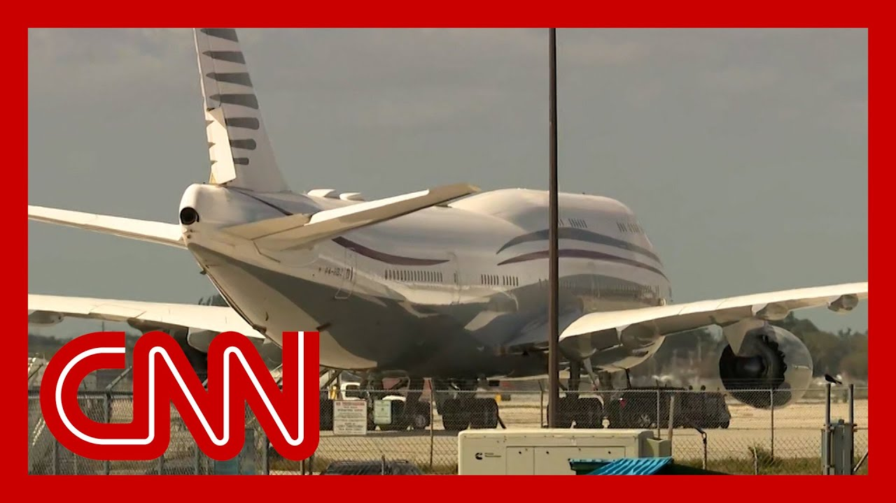

【前白宫道德律师回应特朗普计划接受卡塔尔飞机礼物】
Summary: Donald Trump is set to accept a lavish $400 million Boeing 747 from Qatar's royal family, raising ethical and legal concerns under the Constitution's Emoluments Clause, which requires Congressional approval for such gifts.
摘要： 唐纳德·特朗普计划接受卡塔尔王室赠送的价值4亿美元的波音747飞机，此举引发道德和法律争议，因美国宪法《薪酬条款》规定此类外国政府礼物需国会批准。

⏱️ Estimated Reading Time: 12 min
Donald Trump is set to accept a very pricey gift from the royal family of Qatar, taking delivery of a Boeing 747 that will be used as Air Force One during his second term.
唐纳德·特朗普将接受卡塔尔王室赠送的一架昂贵波音747飞机，该飞机将在其第二任期用作“空军一号”。
The very lavish gift is raising substantial ethical and legal questions, and we want to talk about it now with Richard Painter, former white House ethics lawyer under George W Bush and professor of law at the University of Minnesota.
这份奢华礼物引发重大道德和法律质疑，我们邀请到小布什时期前白宫道德律师、明尼苏达大学法学教授理查德·佩因特进行探讨。
Richard, thank you very much for being here with us and kind of walking us through, some questions around all of this.
理查德，非常感谢您到场为我们解析相关问题。
This is said to be the most expensive gift ever bestowed on a U.S. leader.
这据称是美国领导人收到过最昂贵的礼物。
It has a value of more than $400 million.
其价值超过4亿美元。
The attorney general and white House counsel office have said they believe it's okay legally.
司法部长和白宫法律顾问办公室认为此举合法。
Where do you come down in this?
您对此持何立场？
How would you assess this?
您如何评估此事？
This is legal, in my view, only with consent of Congress.
我认为唯有经国会同意才合法。
That's what the Emoluments Clause of the United States Constitution says.
美国宪法《薪酬条款》明确规定。
that a person holding a position of trust with the United States government cannot accept a gift from a foreign government without the consent of Congress.
任何美国政府受托职位人员未经国会批准不得接受外国政府礼物。
Benjamin Franklin was ambassador to France.
本杰明·富兰克林任驻法大使时。
God had to go to Congress to get consent to accept a snuff box that had diamonds on it from the government of France.
必须通过国会批准才能接受法国政府镶钻鼻烟盒。
that's what the mime of Klaus says.
这就是《薪酬条款》精神。
And this, airplane can only be accepted by President Trump if Congress consents and they say, well, it's given to his presidential library rather than to him.
特朗普总统唯有经国会同意才能接受该飞机，所谓"赠予总统图书馆而非本人"的说法。
that doesn't make any sense.
完全站不住脚。
He's going to be using this plane for the next four years.
未来四年他将实际使用该飞机。
and he then, if he says, goes to his presidential library, that is a gift that requires the consent of Congress under the mime of clause of the Constitution.
若最终归属其总统图书馆，仍属需国会批准的宪法条款管辖范畴。
That's very, very clear.
这一点极其明确。
We can't have our president or anyone else being influenced by foreign government gifts.
我们不能让总统或其他人员受外国政府礼物影响。
And that's why Congress needs to have control over that.
因此国会必须对此监管。
And that's why the Constitution requires that they do.
这正是宪法要求所在。
And, Carter, I gotta say, it's a it's a very wealthy country, I understand that.
卡特，必须指出卡塔尔虽为富国。
they also have been spending over $1 billion supporting Hamas over the years.
但其多年来资助哈马斯超10亿美元。
It's somewhat ironic for the United States to be accepting a gift, from Qatar.
美国接受卡塔尔礼物颇具讽刺意味。
this is, money that really should be used rebuilding Gaza and getting Hamas the heck out of there.
这些资金本应用于重建加沙并清除哈马斯。
Qatar.
卡塔尔。
Why?
为何？
Why is the United States of America accepting a gift of this magnitude that support a terrorist organizations?
美国为何接受与恐怖组织有关联的巨额礼物？
It is a worthy question.
这值得深思。
And can you find a good answer to the question you just posed?
您能找到合理解释吗？
I can't find a good answer at all unless this airplane is part of some big deal.
除非涉及某种交易，否则完全无法解释。
The Art of the deal, where, Donald Trump is going to magically bring peace to the middle East.
比如特朗普借《交易的艺术》神奇促成中东和平。
but, the last time around, the Abraham Accords, the Trump administration was not able to establish a lasting peace.
但上次《亚伯拉罕协议》未能实现持久和平。
and, once again, Qatar, has, along with Iran and some other countries, supported organizations that destabilize the Middle East.
而卡塔尔再次与伊朗等国支持破坏中东稳定的组织。
We need money to be spent on humanitarian causes, trying to rebuild after the destruction of the war in Gaza.
资金应用于加沙战后重建等人道事业。
So let's unpack a little bit of what you were saying there.
请具体阐述您的观点。
You're saying that it must be approved by Congress.
您强调必须经国会批准。
That is, at this moment in time, it seems unlikely for that to happen.
但目前看来可能性不大。
If that does not happen.
若未获批准。
What does that mean?
意味着什么？
I don't think Donald Trump can accept that.
我认为特朗普不能接受。
It's unconstitutional.
这违宪。
now, of course, the amendment's clause of the Constitution, does not have a specific penalty attached.
虽然宪法条款未规定具体处罚。
but, the House of Representatives can impeach a, government official for accepting unconstitutional emoluments from foreign governments.
但众议院可弹劾接受违宪外国薪酬的官员。
During Donald Trump's first term.
特朗普首任期间。
this was limited to hotel rooms and, patronizing as golf courses and all the shenanigans going on with foreign governments that led to investigations, by the House of Representatives and also to some litigation against Donald Trump.
涉及酒店住宿、高尔夫消费等引发众议院调查和诉讼的外国政府往来。
that issue was never resolved.
该问题从未解决。
But now we have a monument on a much grander scale, foreign emoluments, not only this airplane from Qatar, but we also have the Trump family is in, cryptocurrency.
如今问题升级——不仅是卡塔尔飞机，特朗普家族还涉足加密货币。
And we have no idea who's investing in these various cryptocurrency ventures.
我们不清楚加密货币投资方背景。
And some of that may be foreign government money, and that would be unconstitutional under the minus clause.
若含外国政府资金，则同样违宪。
but yes, we are left with that question of who is going to enforce it if Congress doesn't want to consent to this plane.
核心问题在于：若国会不批准，谁来执法？
what are they going to do, just sit there and do nothing and say, well, we're also not going to enforce the United States Constitution.
难道坐视不理，放任宪法被践踏？
If that's the case, then maybe we have to vote them out.
若如此，或许应通过选举更替国会。
All right.
好的。
So so much more to come on this.
此事后续发展值得关注。
But thank you very much for kind of, fleshing that out and giving us some context.
感谢您详细解析背景信息。
Richard Painter, we really appreciate your time.
理查德·佩因特，衷心感谢您。
It's being called a flying palace.
这被称为"飞行宫殿"。
The Qatari royal family is giving President Trump a new plane, one that could become the new Air Force One.
卡塔尔王室赠送特朗普的飞机可能成为新"空军一号"。
The luxury Boeing 747 eight jumbo jet is valued as high as $400 million.
这架豪华波音747-8客机估值达4亿美元。
That's according to an ABC news report.
据ABC新闻报道。
But one question remains can the president actually accept and fly in this new plane from a foreign government group?
关键问题：总统能否合法接受并驾驶这架外国政府赠送的飞机？
Chat is back.
讨论继续。
I don't even know where to begin.
不知从何说起。
with the, like, appearance of impropriety or the security concerns of getting a plane, who wants to start and say, like they're doing this legal rationale, which is that they're not giving it to Trump, they're giving it to the Air Force, who then is giving it to Air Force One, and then they will give it to the Presidential Library afterward.
无论是利益冲突表象还是飞机安全隐忧——其法律说辞是礼物先赠空军，再转"空军一号"，最终移交总统图书馆。
So they clearly are trying to get around at least a spirit of of the Emoluments Clause.
这明显在规避《薪酬条款》精神。
I'll say Donald Trump is not like Air Force One going back to his first term.
需知特朗普首任时就对"空军一号"不满。
He has been trying to get it replaced, and there have been so many delays with the Boeing's new project.
他多次要求更换，但波音新项目屡屡延误。
They basically is fed up.
他已忍无可忍。
He's like, he wants a new plane.
他渴望新飞机。
Boeing is, struggling a bit as a company.
波音公司正处困境。
He's, he's trolling like a few different players at the same time.
他同时在挑衅多方。
But one is Congress, because this is supposed to be a job for Congress to decide whether a gift can go to the president in a way like this.
一是国会——本应由其决定总统能否如此受礼。
And the other is Boeing, because, there is going to be a new Air Force One at the earliest.
二是波音——新"空军一号"最早也要到特朗普任期最后一年才能交付。
It'll roll out roughly within the very last year of, President Trump's presidency.
甚至可能更晚。
and it may be later than that.
届时他可能无缘使用。
So he might not get to fly.
所以您认为这不是在催促波音？
So you don't think this is him being like Boeing?
不。
Why don't you hurry up?
我认为他就是想要新飞机。
no.
没错。
I think he wants a new plan.
看吧。
No.
外国政府显然不能直接赠总统4亿美元现金。
He doesn't.
至少我认为不能。
Yeah.
因此存在明显的道德讨论。
Like, look, there is, a foreign government could not give a president $400 million in cash.
宪法正是为防止外国势力影响而制定。
Or at least I don't think I can, in a minute.
这些都成为本次讨论的焦点。
And so, and so there are obvious ethical discussions and questions and considerations and reasons that the Constitution was written in a way to try to prevent foreign influence on us later.
特朗普还在Truth Social上炫耀"免费获得"，并指责民主党坚持高价购机。
So all of that stuff becomes part of this conversation for very obvious reasons.
配文63个感叹号。
and Trump was kind of boasting about it on Truth Social, basically saying that they're getting it free of charge.
若此事秘密进行后被曝光呢？
And then interestingly, he says it was the crooked Democrats that they insist we pay top dollar for the plane.
如今特朗普公开宣称将这样做——即便辩称赠予五角大楼，若最终归其所有，仍是个人礼物。
Anybody can do that.
其次，接受外国飞机需耗资数亿美元检查监听设备。
The Dems are world class losers.
你不知道它的来历。
well, this is A63 exclamation point.
按此方案，总统将装修该飞机，而本已耗资数十亿美元的新"空军一号"项目仍在推进。
You think so?
当前政府削减开支，普通民众为食品杂货发愁。
Well, imagine if this was happening secretly, and then it was suddenly exposed.
政治上，民众对乘机也心存忧虑。
The fact that it's out there and Trump saying, here's what we're going to do.
不，这行不通。
Not only is it an infringement of the Constitution, even if they say it's going to the Pentagon, if Trump gets to keep the plane at the end, it's a gift to Trump.
请原谅这个双关。
The second point is, if you accept a plane from a foreign power, you're going to have to spend hundreds of millions of dollars checking that there's no surveillance devices on that plane.
为时尚早。
You don't know where it's been.
斯蒂芬·科林斯，你可不在那架飞机上。
and so under this scheme, the president is going to presumably spend doing up this plane while billions of dollars are already being spent on the two airforce ones that are coming down the line.
噢，是啊。
at a time when they're gutting government and normal Americans are facing a lot of trouble paying for their grocery bills politically and are nervous about getting on planes themselves.
No, it doesn't look like it's going to fly.
Pardon the pun.
that's it's too early.
Stephen Collins, you are not part of that plane.
Oh, yeah.